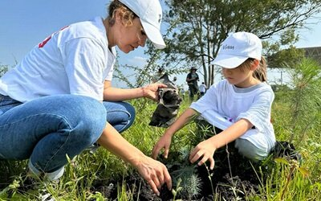
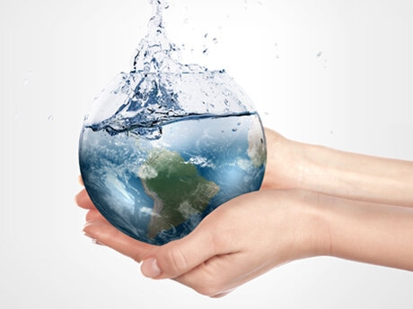
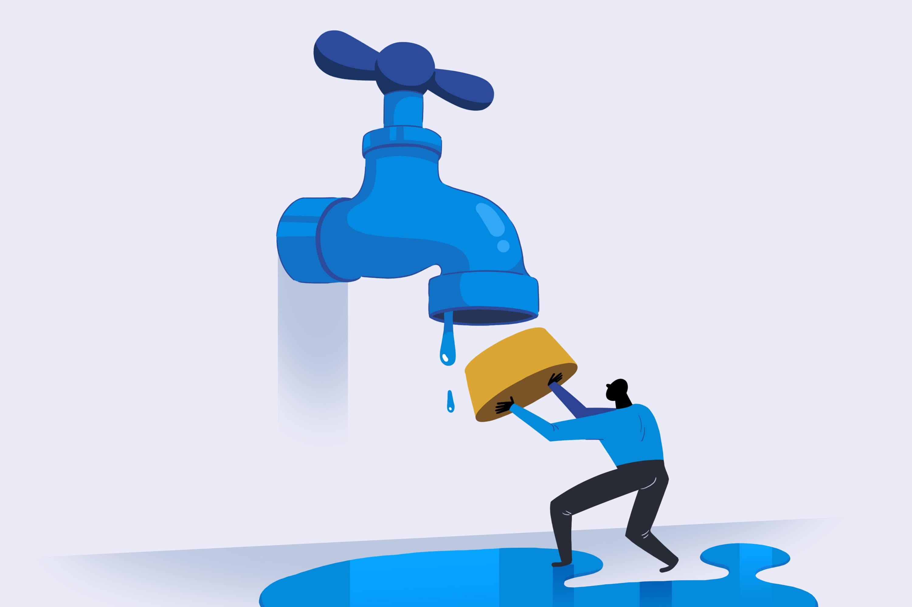
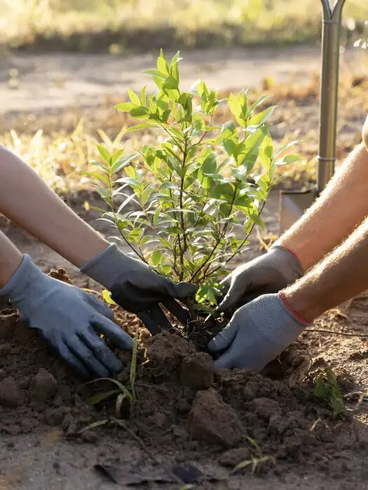

Bienvenidos a EcoGuardianes
Aquí nos unimos para proteger nuestro planeta y fomentar un futuro más sostenible. Creemos que cada pequeña acción cuenta, y juntos podemos hacer una gran diferencia. Explora nuestros recursos, aprende sobre el impacto de nuestras decisiones diarias y descubre cómo puedes ser parte del cambio. ¡Únete a la comunidad de EcoGuardianes y empieza a cuidar el medio ambiente hoy mismo!
Lo ultimo de nuestro Blog
No solo lo hagas por ti, hazlo por ellos tambien
Recila, Reduce y Reutiliza, Si lo hacemos en equipo, construiremos un mañana!
Para muchos de nosotros el medio ambiente no es insignificante, es parte de nuestro hogar.



